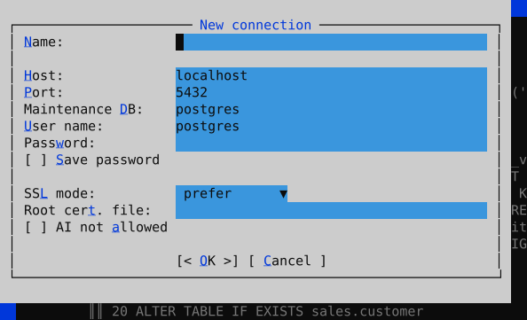
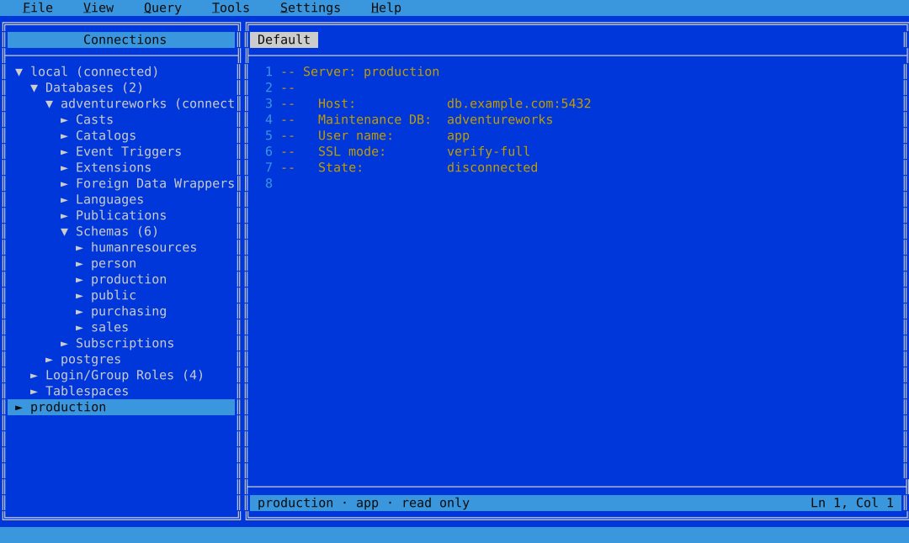

Saving servers, connecting and disconnecting, passwords, SSL — and how many connections pgtc really
opens.
Saved connections
A saved connection describes one server: a name, where it is, and who you are there. The saved connections
are the top rows of the object tree. They are stored in pgtc's settings file — without their passwords.
Saving a new connection
Choose File → New connection… (F9, Enter).
The dialog opens with the usual values of a local server already filled in:

The New connection dialog as it opens.
Fill in the fields:
Filled in for a second server.
Field
Meaning
Default
Name
Your name for the connection, shown in the tree and in every tab's status row. Any text.
Host
Host name or IP address of the server, or the directory of its Unix socket.
localhost
Port
TCP port, 1 – 65535.
5432
Maintenance DB
The database pgtc connects to for the server itself: to list the databases, roles and tablespaces, and for the server-wide dashboard and the profiler. Any database you may connect to.
postgres
User name
The PostgreSQL role to log in as.
postgres
Password
Optional. Shown as *. Leave it empty to be asked when connecting, or when the password is already in .pgpass.
Save password
Write the password to .pgpass after the first successful connect (see Passwords).
Optional: a certificate file to trust instead of the system's certificates.
AI not allowed
The AI assistant (F8) may not be used on this server — its structure is never sent. For production and customer servers (see Privacy).
off
Press Enter (OK). A wrong value — for example a port that is not a number —
shows an error and the dialog stays open.
The new server appears in the tree, not connected yet.
Changing or deleting a saved connection
F2 on a server row.
Edit: put the cursor on the server, press F2 and choose Edit connection…
— or choose File → Edit connection…, which also works with the cursor on a database
or an object below the server. The same dialog opens with the saved values.
Delete:F8 on the server, Delete connection in its context menu, or
File → Delete connection….
pgtc asks first:
Deleting a connected server also disconnects it — with the questions described under
Disconnecting. Only pgtc's entry is deleted; nothing happens on the server, and a
password saved in .pgpass stays there.
Editing a connected server
What happens on OK depends on what you changed:
You changed
On OK
Only the Name or AI not allowed
Applied at once. The
connection stays open, every tab stays.
Anything that makes the connection: host, port, maintenance database, user name, a typed password, SSL mode,
root certificate file
The settings are saved, then the server is disconnected and connected again with
them. First come the usual questions of Disconnecting — unsaved text, open transactions;
then every tab of that server closes (query tabs, dashboard, profiler, statistics). After the new connection the
tree opens down to the object that was selected, if it is still there.
Cancel in one of the questions keeps the old connection and its tabs open; the edited
settings stay saved and are used at the next connect.
Connecting

The cursor is on production, which is not connected: the right side shows what is saved for it.
Put the cursor on the server in the tree.
Press F2 and choose Connect — or use File → Connect.
The context menu of the server: Connect is its first item.
If pgtc does not know the password, the login dialog asks for it.
While connecting, the row says so; then it becomes name (connected) and opens to show Databases,
Login/Group Roles and Tablespaces. The window status line shows the server's version.
Several servers can be connected at the same time.
If the server does not answer, connecting gives up after the connect timeout — 10 seconds by default,
changeable in Settings.
A server older than PostgreSQL 11 is refused with a message.
A server newer than the newest verified version (18) connects, with the warning
“PostgreSQL N – not yet verified with pgtc”.
What the server row shows
The cursor on a connected server: its data, its version and every configuration setting.
With the cursor on a server, the Default tab shows — as SQL comments — the saved data, the state, and for a
connected server the version and the whole configuration: every setting the server shows to your user,
sorted by name, with
its value, as SHOW prints it (6GB, 5min);
where the value comes from: default, configuration file (with the file and the line, when the server
tells you), client, override, …;
(restart needed) when the value was changed in the file but only takes effect after a server restart.
The settings are read the first time you select the server row and kept until you disconnect; Ctrl+R on
the server row reads them again. Move into the text with F6 and use Ctrl+F to find a setting.
The login dialog
pgtc looks for the password in this order: the connection dialog (this session), a connection URI,
the environment variable PGPASSWORD, the .pgpass file. If none has it and the server asks for
one, the login dialog appears.
Type the password and press Enter.
Check Save password to write it to .pgpass once the login has succeeded.
If the password is wrong, the dialog comes back with the server's error message.
Esc gives up; the server stays disconnected.
The password is then kept in memory until you quit pgtc and used for every further connection to that server —
you are asked once, not once per tab.
Passwords: the .pgpass file
pgtc stores passwords only in PostgreSQL's standard password file. It is the same file that psql,
pg_dump and other PostgreSQL programs read, so passwords you already have there work in pgtc at once, and
passwords saved by pgtc work in those programs. pgtc uses no operating-system keyring — the file also works on servers
without a desktop and over SSH.
Platform
The file
Linux, macOS
~/.pgpass
Windows
%APPDATA%\postgresql\pgpass.conf
Any
The file named by the environment variable PGPASSFILE, if it is set.
* in one of the first four fields matches anything.
The first matching line is used.
Lines starting with # are comments. A : or \ inside a value is written
\: or \\.
On Linux and macOS the file is ignored unless only you can read it (chmod 600 ~/.pgpass) —
the same rule as in psql.
What “Save password” does
After a successful connect, pgtc writes one line for the server's host, port, maintenance database and user:
a line for the same host, port, database and user is replaced;
otherwise a line is added at the end;
all other lines and comments stay as they are;
a file that does not exist is created — on Linux and macOS readable only by you.
.pgpass is plain text. Anyone who can read the file can read the passwords; it is
protected only by its file permissions.
SSL (TLS)
The SSL mode of a connection has the same five values and the same meaning as in psql:
SSL mode
Encrypted?
Is the server's certificate checked?
disable
Never
—
prefer (default)
If the server offers it; otherwise not
No
require
Always; no connection without it
No
verify-ca
Always
Yes: it must be signed by a trusted authority
verify-full
Always
Yes, and it must be issued for the host name you connect to
Trusted authorities are those of the operating system's certificate store. If you fill in
Root cert. file, only the certificates in that file are trusted — use it for a
server with a certificate from your own authority.
For a server on the internet, use verify-full: only it protects against a server that pretends to
be yours.
Client certificates (logging in with a certificate) are not supported yet.
How many connections pgtc opens
A PostgreSQL connection belongs to one database, and a connection that runs a long statement cannot do anything
else. So pgtc opens connections as they are needed:
Connection
Opened when
Closed when
The server connection (to the maintenance database)
You connect the server
You disconnect it
One per database opened in the tree
You open the database's row
You disconnect the server
One per query tab
The tab opens
The tab closes
One per dashboard, profiler and statistics tab
The tab opens
The tab closes
Short-lived ones for Find object on a whole server and for exporting / loading a definition
While that work runs
When it ends
Because every query tab has its own connection:
a long query never blocks the tree or another tab;
each tab has its own transaction, its own SET values and its own temporary tables;
cancelling a query, or losing its connection, affects only that tab.
Each tab shows its connection in its status row: local · postgres@adventureworks is the saved connection
local, user postgres, database adventureworks.
When a tab closes, pgtc ends its session properly: a running statement is cancelled first, an open transaction is
rolled back by the server. The server log gets no “unexpected EOF” lines from pgtc.
Disconnecting
Put the cursor on the server and choose Disconnect (F2, or the
File menu).
Disconnecting closes everything of that server: its query tabs, its object tabs, its dashboard, profiler
and statistics tabs. Before anything is closed, pgtc asks what quitting would ask:
for each query tab of the server with unsaved text: Save them? (unless you turned that question off);
if tabs have an open transaction: Commit all / Rollback all /
Cancel.
Cancel at any of these questions stops the disconnect; nothing is closed. Afterwards no
connection to that server is left open.
If a connection is lost (the server restarted, the network failed), the status line says so and the server's row
closes; connect again as usual. A query tab that lost its connection keeps its text.
When you start pgtc with connection options, it saves that connection — unless you already have one with the same
host, port, database, user and SSL mode — and connects at once. The options and the environment variables are the same
as psql's; they are listed in Reference → Command line.
-W always asks for the password; -w never asks (a missing password is then an error).
A password given in a URI or in PGPASSWORD is used for this run only and is not written anywhere.